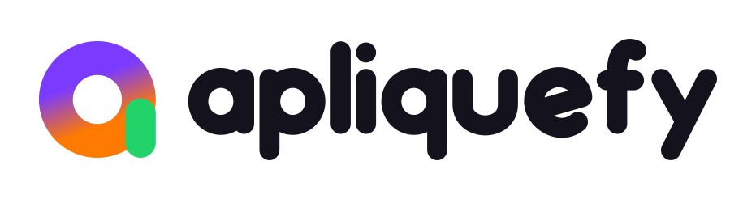

Auxiliar de loja
Mercado Horizonte

Componentes para uma busca por trabalho que cabe na vida das pessoas. Uma base próxima, consistente e fácil de entender.
Altura padrão de 44 px. Foco visível pelo teclado. Uma hierarquia estável entre ações principais, secundárias e destrutivas.
Ação destrutiva exige contexto e confirmação no produto final.
Rótulos persistentes, exemplos concretos e mensagens que explicam como corrigir um problema.
O estado selecionado aparece na forma e na cor. Controles usam comportamento nativo ou semântica equivalente.
Exemplos fictícios de profissões diferentes, apresentados com a mesma hierarquia e o mesmo cuidado.
Mercado Horizonte
Escritório Aurora
Status sempre nomeados. Mensagens objetivas, com orientação e sem prometer contratação.
Escolha as áreas, a região e os horários que fazem sentido para você. Revise suas preferências sempre que precisar.
Complete sua disponibilidade para continuar.
Experimente outra função ou amplie a região da sua busca.
Carregando oportunidades…